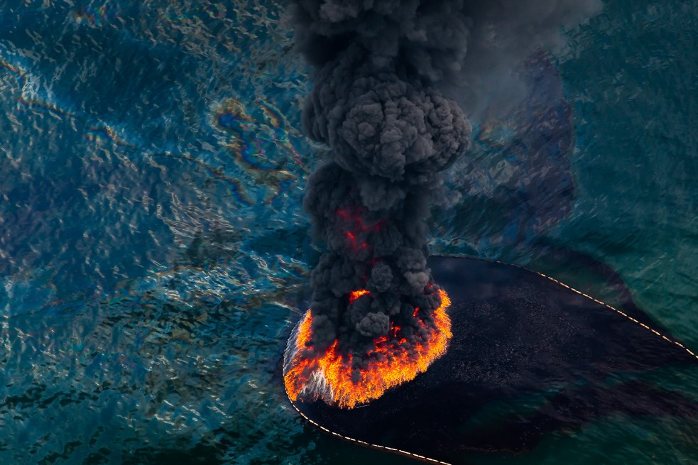
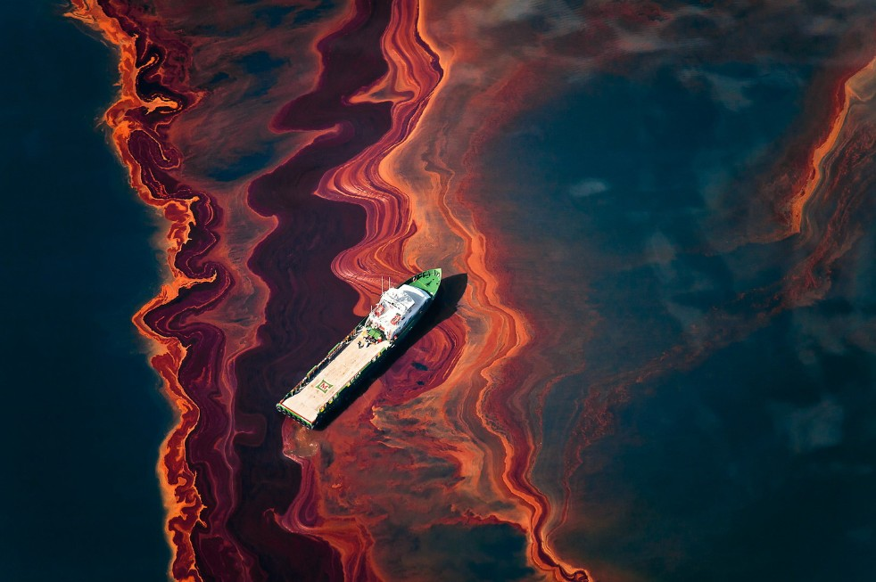

Spill
|
Los afectados de la contaminación | |
| Aunque parezca una imagen comun de una especie rara de pelicano, en realidad son pelicanos normales pero ensuciados por un derrame de petróleo, lo que resalta el impacto negativo de la contaminación por la explotacion de petroleo sin control, que no nos afecta a nosotros directamente pero si a la fauna marina y a la terrestre | ||
| Etiquetas: #2010 #Contaminacion #Animales #Petroleo | ||
 |
Muerte disfrazada de belleza |
| Aunque la foto parezca una marea con un reflejo muy bonito y raro, en realidad es una mancha de petróleo en el océano, que crea un efecto visual llamativo pero que representa un grave problema ambiental debido a la contaminación que genera en los ecosistemas marinos | |
| Etiquetas: #2010 #Contaminación #Oceano #Petroleo |
|  | Llamas en el mar | |
| Fotografía aérea de un derrame de petróleo que por algun motivo se ha prendido en llamas en medio del oceano, creando un efecto visual aunque llamativo y curioso, representa un grave problema ambiental | ||
| Etiquetas: #2010 #Contaminacion #Derrame #Aérea | ||
|  | Barco nadando en petroleo | |
| Imagen de un barco encima de un enorme charco de petróleo en el océano | ||
| Etiquetas: #2010 #Aérea #Contaminacion #Barco | ||
 |
Las venas del mar | |
| Imagen aérea de un derrame de petróleo en el océano que crea patrones similares a venas que se extienden por el agua, resaltando la forma en que la contaminación se dispersa y afecta vastas áreas del ecosistema marino | ||
| Etiquetas: #2010 #Oceano #Contaminacion | ||